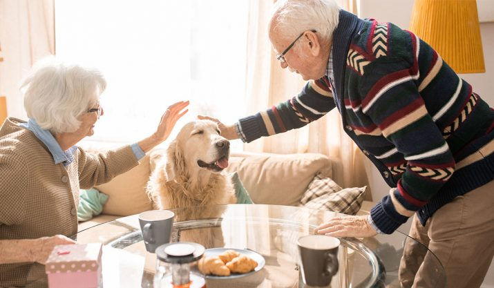
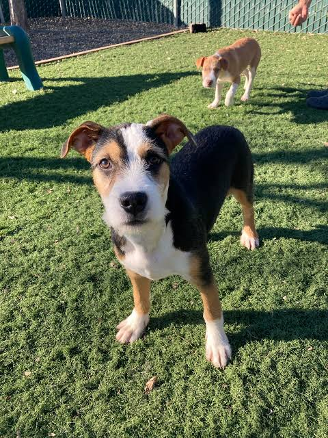

Welcome to Paws and Purpose
We are dedicated to rescuing animals and providing therapy for senior pets. Explore our website to learn more about our mission, adoptable pets, volunteer opportunities, and our therapy programme.

Our Mission
To rescue and rehome animals in need, giving them a second chance at a loving life. Through our pet therapy programme, we also help lonely seniors feel less alone bringing comfort, companionship, and a little joy through regular visits from our rescued animals.

Luke is a 3-year-old Labrador Retriever mix who loves to play fetch and cuddle. He is looking for a forever home where he can be part of the family.
Meet more Adoptable Pets like LukeStatistics
- Animals Rescued: 350+
- Active Volunteers: 45
- Successful Adoptions: 200+
- Senior Citizens Benefiting from Our Therapy Programme: 50+
Ready to make a difference?
Join our community of animal lovers and help us make a positive impact. Whether you want to adopt, volunteer, or support our cause, there are many ways to get involved.
Get Involved